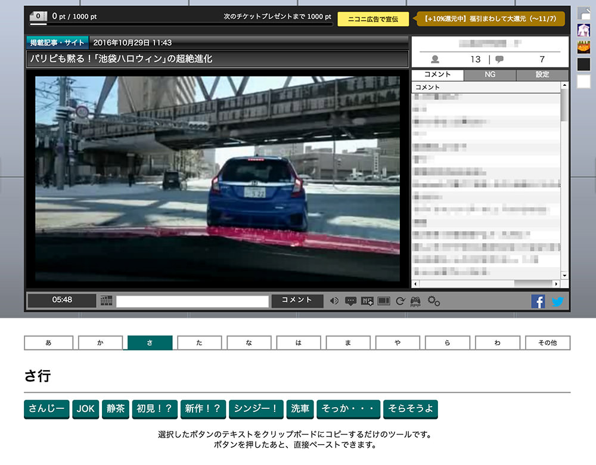
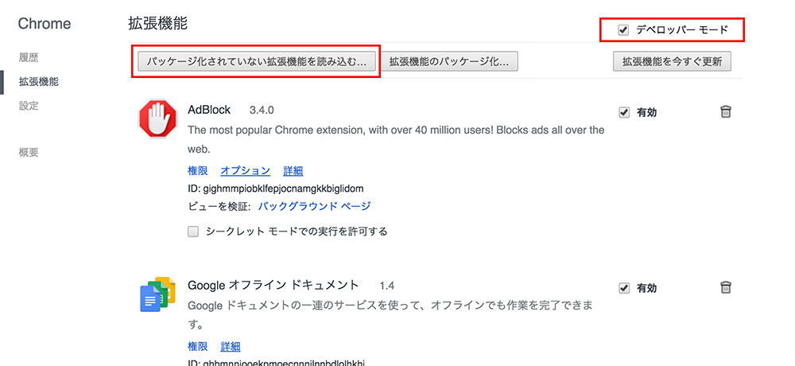
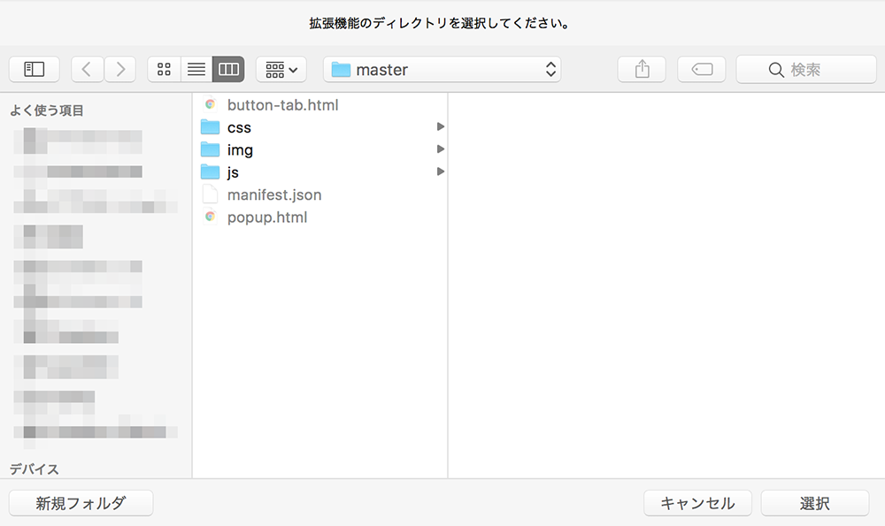
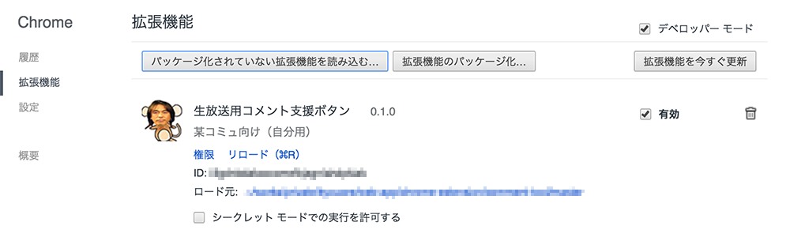
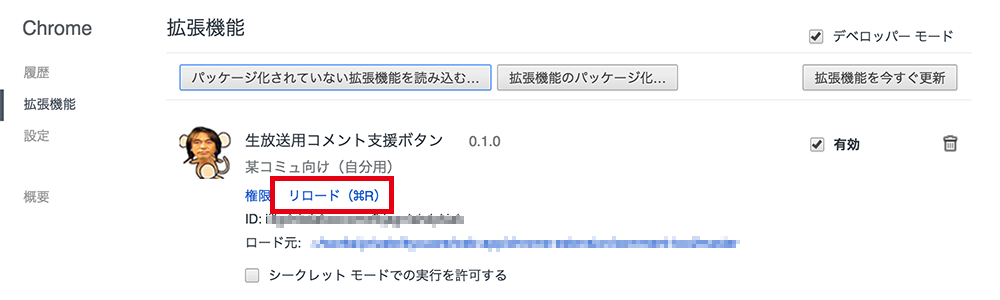

コメント支援ツール（自分用Chrome拡張）
毎回打つのがだるいコメントをボタンからいけるようにしたい（同じようなアドオンすでにありそうだけど）。
Google Chrome拡張機能です。その他のブラウザでは動作しません。

機能
- ボタンを押すとそのテキストがクリップボードにコピーされる。
- あとはコメント欄にペーストするだけ。
- 本当はボタンから直接コメント投稿をしたいが調査中。
インストール
今回はChromeウェブストアにアップしていないので、Zipでダウンロードしてデベロッパーモードで使用します。（＝自分でボタンを増やせます）
ダウンロード
- リンク先でZipをダウンロード
- ダウンロード後は好きな場所に置いてください。
（後で位置を変えたりフォルダ名を変更すると、読み込み直す必要があります。）
Chromeの「設定」>「拡張機能」
デベロッパーモードをONにし、「パッケージ化されていない拡張機能を読み込む」。
ファイルの選択モードになったら、一式の入ったフォルダを選ぶ。例のアイコンが出たらOK。



カスタマイズ（ボタンを増やす）
button-tab.htmlを開くと行ごとにボタンが記述されている。
これをコピーしたりテキストを変えたりすればOK。
自分がよくリクする動画のIDを登録するのもいいかも。
<li><button>勝ちに行かない***は見たくないからね</button></li>
<li><button>かっこいい！</button></li>編集後は拡張機能のリロード＆ブラウザのリロードをしないと変更が反映されない。
